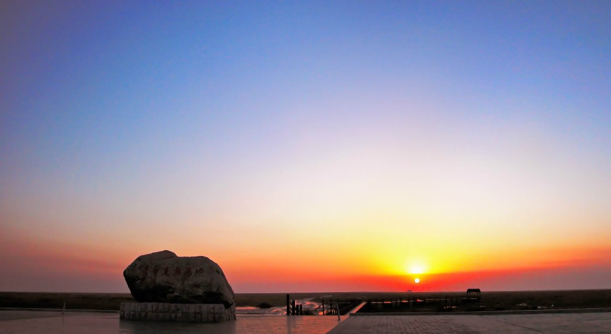

崇明岛地处长江口，是中国第三大岛，被誉为“长江门户、东海瀛洲”，是世界上最大的河口冲积岛，世界上最大的沙岛。 崇明岛水洁风清，到处都有未经人工斧凿的天然风光。绿树成荫的环岛大堤，犹如一条绿色巨龙，盘伏在长江口上。清晨，登上大堤东端，欣赏东海日出，不减泰岱奇观；傍晚，立于大堤西侧，饱览长河落日，耳听归舟晚唱，令人心旷神怡。 岛上有众多的历史名胜和人文景观。有面向浩瀚江水的瀛洲公园；千姿百态的城桥镇澹园；还有金鳌山、寿安寺、孔庙、唐一岑墓、明潭、郑成功血战清兵的古战场等遗址；有华东地区最大的人造森林——东平林场。
作为海岛，崇明岛当然有其一些独特的资源与景观。大致有三样特别之景。 一曰蟹多。崇明岛上，尤其在近海边的泥滩上，到处是小蟹，几乎黑压压的布满滩面。游人行走滩面，小蟹们受到惊吓，纷纷逃入滩上无粉的洞穴，速度之快，令人惊叹！可以说，即使你以最快的速度俯身抓拾，也难碰触到它们半点。当然，滩面上蟹穴满地，用“千疮百孔”形容之，绝不为过。所以，崇明岛又有“蟹岛”之美名。 第二大特色是海滩芦苇成林，可称其为“环岛绿色长城”了。由于芦苇适宜于滩地生长，且长势甚猛，在崇明岛北岸及东南岸团结沙一带，我们曾看到宽达数公里的芦苇带。人行其中，似觉无边无际，可能当年沙家浜的芦苇荡之规模亦不过此。 第三大特色是岛身形状迁徙无常，始终处于迅速的演变过程中。不像基岩岛屿，千百年来基本上维持着相对稳定的状态，崇明岛却自始至终演变不断。